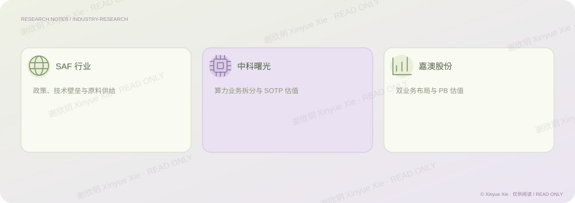

中信证券 · 行业与公司研究
能源转型与国产算力研究
SAF、中科曙光与嘉澳股份
PROJECT NOTES / THE BIG PICTURE
研究思路

01SAF 行业研究
行业研究：基于欧盟对生物柴油加征关税背景，关注生物航煤（SAF）高技术壁垒、高附加值、双重碳积分性质及中国餐厨废油资源丰富等利好因素，预测 2030 年全球市场规模将达到 2266 亿元。
02公司研究与估值
公司研究：对中科曙光采用 SOTP 分部估值法，将子公司单独估值、主业给予 29 倍 PE，核心判断为其“全栈自主可控 + 30% 高毛利率”的算力整合模式被低估；分析嘉澳股份生物质能源 + 环保增塑剂双线布局，结合百万吨在建产能、政策利好、实控人增持及大客户入局，给予 4.6 倍 PB 估值。
03研究口径
此处保留实习期间的研究结论和当时估值口径，展示研究经历与方法。
相关经历中信证券 · 行业研究
谢欣玥 Xinyue Xie · 研究作品仅供在线阅读
← 返回全部作品